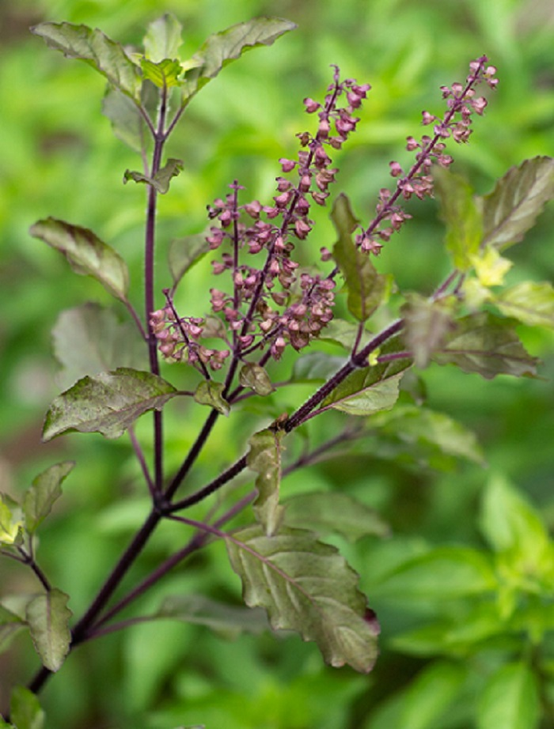

<div class="container-fluid">
    <div class="row">
        
            <div class="col-md-7">
                
            </div>
            <div class="col-md-5">
                
                
                <span>GET THE 'TULSI' WELLNESS </span><br>
                <b> GUARD AGAINST COUGH, COLD</b><br>
                    <p> Tulsi is long known to have anti-inflammatory, anti-bacterial, and anti-viral properties that help fight infections, hasten the healing of wounds and increase immunity against cough and cold. </p> <br>
                    
                    
                   <b>FIGHT STRESS</b><br> 
                    <p>Tulsi is a powerful adaptogen that helps your body ward off the ill effects of physical and mental stress. It helps lower cortisol levels, relaxes your nervous system, and boosts cognitive function. </p><br>
                    
                    
                    <b>SUPPORT METABOLISM</b><br>

                    <P>Tulsi is packed with antioxidants that enhance liver health, reduce acid reflux, and boost digestive system function. </P>
                    
                </div>
        
    </div>
</div>